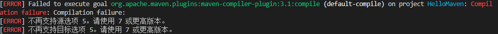
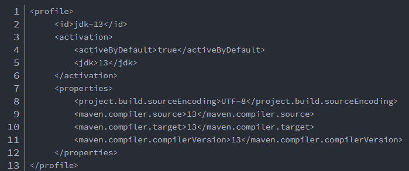
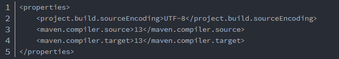

Maven 警告 expected START_TAG or END_TAG not TEXT
出现错误

原因
在Maven警告提示区域存在空格等不规范字符，在网上复制到项目中时经常出现类似问题。
pop.xml文件，setting.xml文件极易出现此类问题。
解决
将空格删除，规范一下格式就好了。
参考资料：
Maven 警告 expected START_TAG or END_TAG not TEXT
Maven [ERROR] 不再支持源选项 5，请使用 7 或更高版本的解决办法
出现错误

原因
maven里的conf的setting.xml中已经写清楚了：（这里是jdk14了）所以如果不配可能就是默认低版本的
解决
解决方法一：在项目的pom.xml文件中指定jdk版本。

解决方法二：在项目的pom.xml文件中指定jdk版本
